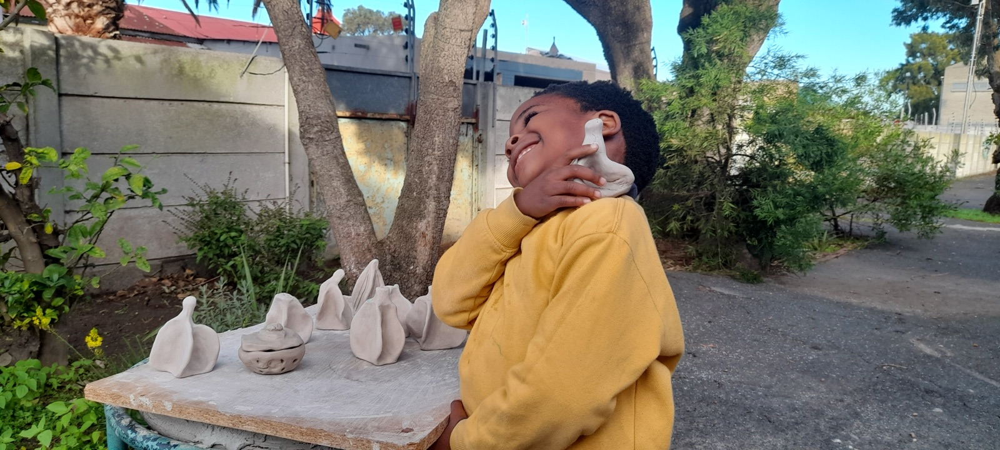
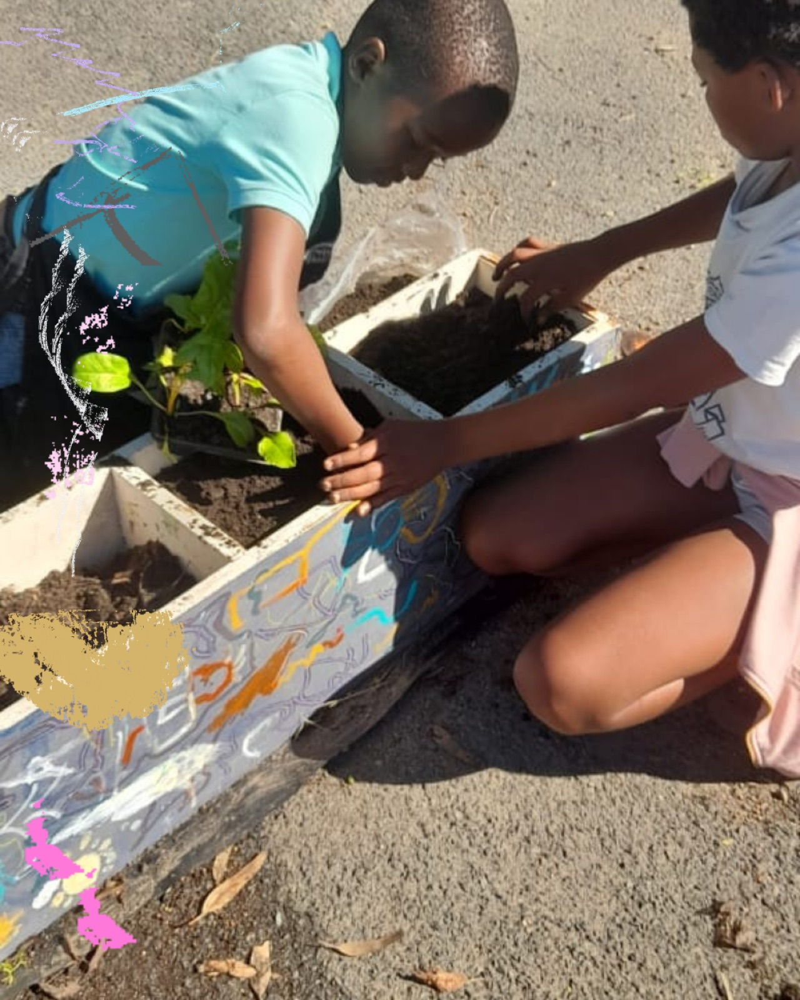
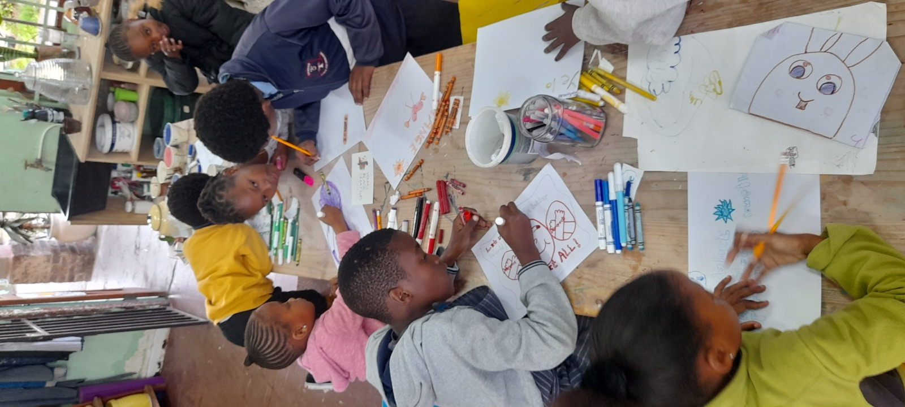
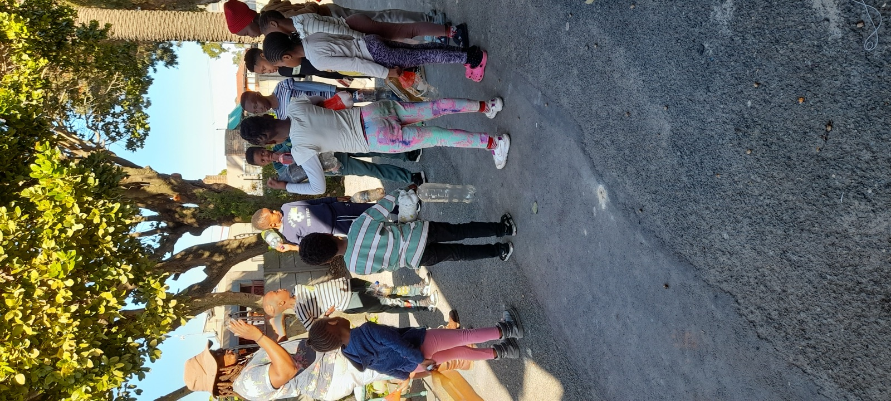
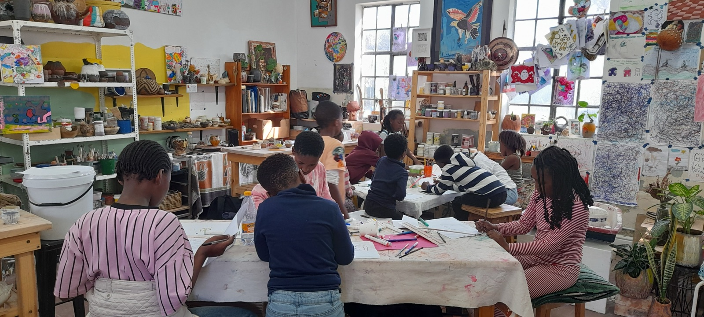
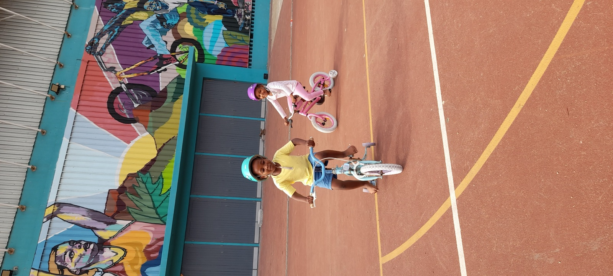
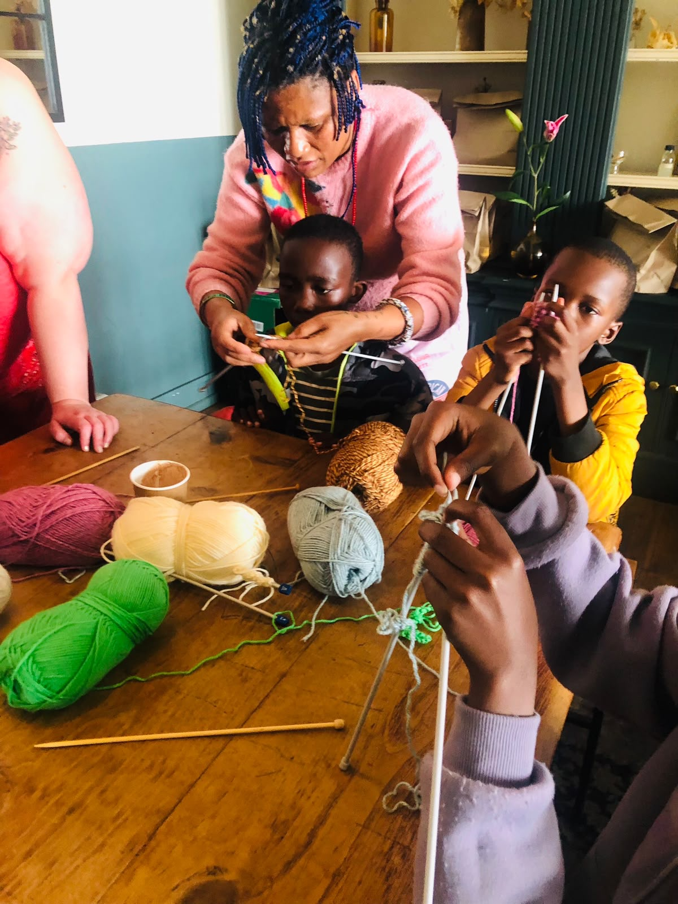

Ceramics & clay
Hand-build, sculpt and paint with clay, turning ideas into objects.
Children learn by doing: exploring materials, practising new skills, making stories and working through ideas together.
Explore through making

Hand-build, sculpt and paint with clay, turning ideas into objects.

Plant, tend, harvest and learn about soil, food and how living things grow.

Use color and mark-making to share ideas, feelings and observations.

Create characters, tell stories, move, speak and listen together.

With tools and materials available, children can choose a direction, test ideas and solve problems together.

Visits and trips help children meet new places, people, materials and ways of working.

Working with yarn and simple tools gives children a chance to practise a new craft, build patience and learn from one another.
Recent projects
Browse dated stories, visits and photos from the children’s recent projects.
Support Us · Contact Us
Help sustain a safe, creative space for children in Langa. Financial contributions, useful materials, caring expertise and your time all make a difference.
Explore ways to support